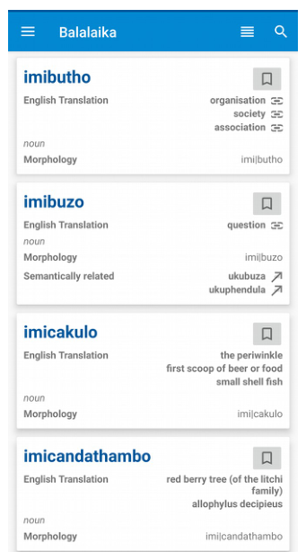

RAIL 2020Tafsiri ya mashine
Uwezeshaji na Ufikiaji wa Kamusi za Lugha za Kibantu katika Enzi ya Kidijitali: Ufikiaji wa Simu ya Mkononi katika Mazingira Huria
Tafsiri ya mashine, haijakaguliwa na binadamu. Makala asili ndiyo toleo la rejeo; sentensi zilizopigiwa mstari ni zile ambazo ukaguzi wa kiotomatiki haukuwa na uhakika nazo.
Proceedings of the first workshop on Resources for African Indigenous Languages.
Tafsiri ya Ernst van Gassen (Arktos AI Lab), yenye leseni CC BY-NC 4.0 kama makala asili. Matumizi tena yanaruhusiwa kwa kutaja mwandishi, kwa matumizi yasiyo ya kibiashara tu. Waandishi asili hawajakagua wala kuidhinisha tafsiri hii.
Maandishi matupu ya kutumia tena, pamoja na leseni yake: Kiswahili · LESENI
Taasisi
Thomas Eckart, Sonja Bosch, Uwe Quasthoff, Erik Körner, Dirk Goldhahn, Simon Kaleschke
Natural Language Processing Group, University of Leipzig, Germany
Department of African Languages, University of South Africa, Pretoria, South Africa
Anwani za barua pepe zimeondolewa kwa sababu za faragha. Zinapatikana katika PDF asilia.
Muhtasari
Mchango huu unaelezea programu ya kamusi ya simu ya bure na ya wazi inayotokana na data ya kamusi ya wazi. Lengo mahususi ni juu ya uwezeshaji na uwasilishaji wa data unaomfaa mtumiaji. Hii inajumuisha, pamoja na mpangilio wa lemma kwa alfabeti, vigezo vingine vya uchaguzi wa istilahi, makundi, na upatikanaji. Zaidi ya utendakazi wa utafutaji wa mashina au mizizi - unaohitajika kutokana na uchangamano wa kimofolojia wa Lugha za Kibantu - upangaji wa lemma katika makundi kulingana na eneo la somo lenye ugumu tofauti unaruhusu ubinafsishaji. Wasifu wa kamusi unafafanua chaguo zinazopatikana za uwasilishaji wa data ya kamusi katika programu na unaweza kubainishwa kulingana na mahitaji ya kikundi husika cha watumiaji. Uwekaji wa maneno katika vekta na mbinu zinazofanana hutumika kuunganisha maneno yanayofanana kimaana au yanayohusiana. Muundo wa msingi wa data ni wazi kwa kamusi ya lugha moja, lugha mbili au lugha nyingi na pia inasaidia uhusiano na rasilimali ngumu za nje kama vile Wordnets. Programu hii katika hali yake ya sasa inalenga data ya kamusi za Kixhosa na Kizulu lakini rasilimali zaidi zitaunganishwa hivi karibuni.
Maneno Muhimu
data za kamusi, matumizi ya simu za mkononi, uwezo wa kutumika
1. Utangulizi
Seti za data za kileksika ni rasilimali muhimu sana kwa makundi mbalimbali ya watumiaji, kuanzia watoto wa shule hadi waundaji wa maandishi wa kitaalamu. Hata hivyo, njia za jadi za kuwasilisha na kusambaza maarifa haya ya thamani kwa njia ya vitabu vilivyochapishwa haviwafikii watumiaji wote wenye uwezo tena. Njia mpya za upatikanaji wa data na ushiriki ni lazima zitambuliwe na kutekelezwa kuwa sehemu ya maendeleo yao zaidi. Ingawa rasilimali nyingi muhimu tayari zinapatikana kupitia kurasa za wavuti, mwenendo wa hivi karibuni wa matumizi ya programu maalumu za simu za mkononi (apps) hasa kwa watazamaji wadogo unachukuliwa kwa kiwango kidogo tu na umesababisha – kama kuna – aina mbalimbali za programu zisizoendana, zinazomilikiwa na hivyo – baada ya muda fulani – programu zilizoachwa na hisa za data zisizohifadhiwa. Jamii ya simu za mkononi Afrika ni ile inayokua kwa kasi. Kwa upande wa Afrika Kusini, iliripotiwa na Takwimu za Afrika Kusini kwamba idadi ya kaya zinazomiliki simu za mkononi iliongezeka kwa kiasi kikubwa kutoka 31.9% mwaka 2001 hadi 88.9% mwaka 2011, wakati utafiti wa kijamii wa mwaka 2016 (Takwimu za Afrika Kusini, 2016) ulionyesha ongezeko zaidi hadi 93.8% ya kaya. Simu za mkononi ziliingia chini ya kategoria ya “vitu vya nyumbani”, na kwa kushangaza, ziliipata asilimia ya juu zaidi baada ya jiko la umeme, runinga, na friji. Kwa hiyo, toleo la simu za mkononi la kamusi za lugha za Bantu lingeweza kurahisisha ufikiaji kwa asilimia kubwa ya idadi ya watu ikilinganishwa na kamusi za jadi ambazo ni ghali, mara nyingi hazipatikani na hata zimepita wakati. Kamusi hizo za kielektroniki pia huwaokolea watumiaji muda ikilinganishwa na kamusi za karatasi. Zaidi ya hayo, zinaweka “kumbukumbu ya kazi kwa usindikaji wa uelewa badala ya kuvurugwa kwa kuchukua muda mwingi kutafuta maneno katika kamusi za jadi” (Deng na Trainin, 2015:58). Kwa kuzingatia mazingira ya jumla haya, mchango huu unalenga programu ya kamusi ya Android iliyobuniwa kama mradi wa chanzo wazi ili kuongeza uonekano wa rasilimali zinazopatikana na kama jaribio la kufikia na kuamsha makundi mapya ya watumiaji. Itaonyeshwa jinsi vifaa vinavyopatikana - kwa sehemu vikiwa vimekusanywa au kutayarishwa na waandishi wenyewe - viwezavyo kupatikana na jinsi uwazi uwezavyo kusaidia kufikia matokeo kama hayo kwa nyenzo nyinginezo pia. Kutokana na uchambuzi wa programu zilizopo za simu za mkononi na udhaifu wao, baadhi ya mbinu za kuboresha uwasilishaji na upatikanaji wa data kwenye skrini ndogo zitaonyeshwa kwa kuzingatia mbinu za (semi-)automatiki kwa lugha zenye rasilimali chache.
2. Uwazi kama sharti la ushirikiano na ushiriki
Kanuni za data za FAIR (kupatikana, kufikiwa, ushirikiano, na utumiaji tena; tazama Wilkinson et al., 2016) zina ushawishi unaokua katika kazi ya kila siku ya watafiti na wanasayansi. Hata hivyo, mkazo huu - kwa ujumla unakubalika - kwenye seti ya chini ya mahitaji ya kuruhusu utafiti wa kisasa na wazi bado haujatekelezwa katika maeneo yote. Matokeo yake ni makubwa na yenye matatizo hasa kwa taaluma ambapo upatikanaji wa rasilimali za kuaminika zenyewe ni tatizo. Miongoni mwa mengine, hii ni hasa kesi kwa lugha nyingi za asili za Kiafrika ambazo nyingi zinaweza kuchukuliwa kuwa na uhaba wa rasilimali. Ili kufikia mazingira ya wazi ambapo watafiti na watumiaji wanaopendezwa wanaweza kushirikiana na kuendeleza rasilimali mfululizo, kiwango kinachohitajika cha "uwazi" hakijumuishi tu uwezo wa kupata, kufikia, kushirikiana, na kutumia tena data. Katika muktadha wa mchango huu, mkazo upo katika hali kamili zaidi wakati wa kutoa upatikanaji wa rasilimali za maneno kwa lugha za Kibantu. Maoni yafuatayo kuhusu uwazi yana umuhimu hususa hapa:
- Data wazi: Upatikanaji wa data kwa ajili ya utafiti, mkusanyiko, na kwa matumizi tena katika miktadha mingine ni sharti la wazi kwa jamii hai na maendeleo endelevu ya mazingira ya rasilimali za lugha. Katika mchango huu, seti ya data ya kamusi ya Xhosa ambayo awali ilitolewa na waandishi chini ya leseni ya wazi (Bosch et al., 2018), imetumika. Hata hivyo, hii inatumika tu kama mfano halisi; kikomo kwa seti hii maalum ya data au lugha ya Bantu haikukusudiwa. Uwazi wa data na uzingatiaji wa viwango vya jumla vya uwakilishi wao rasmi huruhusu ujumuishaji wa rasilimali nyingine pia, kama ilivyojaribiwa tayari kwa kutumia rasilimali kutoka mradi wa Comparative Bantu Online Dictionary (CBOLD).
- Programu huria: Mbali na mkazo katika data inayoheshimu kanuni za FAIR, utumikaji tena wa programu ni kipengele kingine muhimu. Programu huria au ya bure huruhusu utumikaji tena wa programu kwa madhumuni mapya au seti za data na uendelezaji na uboreshaji wao kwa ushirikiano. Kwa hiyo, programu iliyowasilishwa hapa inatolewa kwa uhuru chini ya leseni ya Programu huria na inaweza kutumika tena na pande nyingine zenye nia.
- Programu rafiki kwa mtumiaji: Upatikanaji huria wa data kupitia violesura huria vya mtumiaji ni sharti moja tu la kuvutia watumiaji na washiriki watarajiwa. Uzoefu wa mtumiaji unaotolewa na programu na ufaafu wake kwa kazi husika za mtumiaji ni sharti lingine muhimu la awali. Kwa bahati mbaya, programu nyingi za sasa - zikiwemo programu za kibiashara - zinajaribu tu kuhamisha mifumo iliyoimarika ya kupanga na kufikia data ya kamusi hadi enzi ya kidijitali. Sehemu zinazofuata zitazingatia mbinu mpya ambazo bado zinawezekana kwa eneo lenye changamoto la lugha zenye rasilimali chache.
- Uingizaji wa data unaomfaa mtumiaji: Ili kurahisisha utumiaji tena wa programu, juhudi zinazohitajika kuingiza seti nyingine za data zinapaswa kuwekwa chini iwezekanavyo. Hii inaweza kufikiwa kwa njia tofauti: kwa kutegemea muundo sanifu uliopo na/au kwa kutoa utaratibu rahisi wa kuingiza data ndani ya programu ambao unatumika hata kwa watumiaji wasio na uzoefu. Waandishi wameamua kuchagua mbinu mbili ambapo data ya kileksika inatolewa kwa namna ya faili za thamani zilizotenganishwa kwa safu (CSV) ambazo zinaweza kuundwa, kudumishwa, na kuhaririwa kwa kutumia programu ya kawaida ya ofisi (kama LibreOffice au Microsoft Excel). Kwa miundo iliyoboreshwa zaidi na iliyoimarika, taratibu za ubadilishaji zinatolewa. Hii sasa inajumuisha skripti za ubadilishaji kwa data iliyopangwa kulingana na Modeli ya Lugha ya Bantu (BLM) ambayo inategemea ontolojia ya MMoOn (Klimek, 2017). Msaada wa muundo mwingine unapangwa kwa siku zijazo.
- Rasilimali za nje za wazi: Hakuna programu inayoweza kutoa habari zote zinazopatikana kwa lugha au kujumuisha rasilimali zote zilizoanzishwa na mara nyingi ni kubwa sana za nje. Hata hivyo, viungo vya moja kwa moja ni kipengele chenye manufaa na hutumia mazingira yaliyosambazwa ya rasilimali za lugha. Katika muktadha huu, marejeleo ya data ya African Wordnet (AfWN) (Bosch na Griesel, 2017) na uchanganyaji wa kina wa nyenzo za maandishi kamili zilizochotwa kama mifano ya matumizi (Goldhahn et al., 2019) kupitia huduma za wavuti za RESTful (Büchler et al., 2017) inachukuliwa kuwa na umuhimu mkubwa.
Juhudi za sasa kuelekea miundombinu jumuishi na wazi ya utafiti kama vile SADiLaR ya Afrika Kusini, CLARIN/CLARIAH ya Ulaya (Hinrichs & Krauwer, 2014) na zaidi zinaweza kuonekana kama muktadha wa asili wa maendeleo haya yote.
3. Vikundi vya Watumiaji na Wasifu
Utata huu wa jumla wa ufikiaji wa data unapotegemea muundo wa data rahisi kiasi haupaswi kuzuia mahitaji ya utumiaji. Kuna aina mbalimbali za vikundi vya watumiaji vinavyowezekana kama vile wajifunzaji wa lugha wa umri tofauti (wanafunzi wa umri tofauti, watu wazima), viwango tofauti vya ujuzi (waanzao, wajifunzaji wa L1 na L2, wataalamu), kazi tofauti za kutimiza (upokeaji wa maandishi dhidi ya uundaji wa maandishi), na aina tofauti za kamusi (za lugha moja, za lugha mbili au nyingi zenye viwango tofauti vya maelezo). Kamusi moja inaweza kulenga kikundi kimoja cha watumiaji au vikundi vingi vya watumiaji. Mchanganyiko wa kikundi lengwa cha watumiaji na data inayopatikana katika kamusi huamua maelezo ya kamusi yanayowasilishwa kwa mtumiaji. Kwa kamusi iliyotolewa, maonyesho kwa makundi tofauti ya watumiaji hufafanuliwa na mtoa data wa kamusi ndani ya kamusi, kikamilifu pamoja na mwandishi wa kamusi (s). Matokeo ni ama chaguo moja la kiolesura kwa kamusi fulani au uteuzi wa violesura viwili au vitatu tofauti (kwa mfano, kwa wanaoanza au wataalamu), ambapo mtumiaji anaweza kuchagua chaguo sahihi. Ufafanuzi wa kiolesura unatumika kwa muundo mkuu na muundo mdogo. Muundo mkuu unapaswa kufikiwa ili kuchagua mapema lemma zinazoonyeshwa kwa mtumiaji. Katika kamusi ya kawaida, lemma zote zinawasilishwa kwa mpangilio wa alfabeti. Katika ngazi hii, tuna chaguo la kuzuia seti ya lemma (kwa mfano, kwa wanaoanza au kulenga maeneo maalum ya somo) na kubadilisha mpangilio wake. Kwa muundo mdogo, tunaweza kuzuia kamusi kwa kupuuza baadhi ya taarifa ambazo zinachukuliwa kuwa zinajulikana kwa (au hazina umuhimu kwa) mtumiaji lengwa wa kamusi. Hiyo yaweza kutia ndani habari katika kamusi zenye lugha mbili ambazo ziko katika lugha ya asili ya mtumiaji au habari ambazo hazihusiki kwa kazi hususa ambayo mtumiaji hujaribu kutimiza.
Kwa sababu hiyo, makundi ya watumiaji yaliyofafanuliwa yanapaswa kupatanishwa na wasifu wa watumiaji unaoungwa mkono wenye matokeo ya moja kwa moja kwa uteuzi na uwasilishaji wa data za kileksika. Upatanishi huu unaweza kupangwa kulingana na mifano ifuatayo:
- Kwa wanafunzi wa lugha, ni muhimu sana kupata maneno yanayomilikiwa na uga sawa wa semantiki katika uwasilishaji uliounganishwa. Hii inaweza kujumuisha msamiati ambao ni sehemu ya uga sawa wa semantiki au - hasa katika muktadha wa elimu ya msingi - sehemu ya somo lilelile. Uteuzi wa lemma zinazowasilishwa pia hufafanuliwa na uwezo wa watumiaji na unaweza kujumuisha uzuiaji wa maneno ya mara kwa mara, msamiati wa msingi, au maneno yanayojulikana kutoka masomo yaliyopita. Katika kiwango cha muundo mdogo, hii inaweza kujumuisha mkazo katika tafsiri na mifano halisi ya matumizi, huku ikipunguza kiasi cha taarifa za mofosintaksia hadi kiwango cha chini kabisa.
- Kwa waandishi wa kitaalamu, wasifu wa mtumiaji unaofaa unaweza kujengwa kwa mujibu wa hilo. Hii inaweza pia kujumuisha mkazo wa pekee kwenye msamiati wa kikoa mahususi (ukiacha kabisa msamiati wa msingi), taarifa za taksonomia (kama visawe au vinyume), na marejeleo ya vyanzo vya nje, vya ziada kwa taarifa zisizo za kileksika.
Mkazo huu kwenye wasifu wa mtumiaji unaweza kuonekana kama kizuizi kisichohitajika ikilinganishwa na unyumbufu kamili wa usanidi unaoendeshwa na mtumiaji. Hata hivyo, ujasiri wa watumiaji wa kurekebisha kiolesura ili liendane na mahitaji yao maalum mara nyingi huwa wa chini, jambo linalotofautiana wazi na gharama za kiufundi za kutoa urahisi huo katika programu. Kupunguzwa kwa chaguo hadi kikundi kidogo chenye mantiki kunaonekana na waandishi kama maelewano yanayowezekana.
3.1 Njia za Uteuzi wa Lemma
Kwa kawaida, kwenye skrini ya simu ya mkononi, hadi lema kumi zinaweza kuonyeshwa pamoja na kichwa cha kamusi kilichochaguliwa. Uchaguzi wa lemma hizi ni muhimu kwa matumizi rahisi ya kamusi. Suluhisho la kawaida ni kuchaguliwa kwa maneno jirani ya kialfabeti katika orodha ya lemma. Katika hali nyingi, kuna mbadala zinazovutia zaidi:
- Uteuzi mdogo wa kialfabeti kwa masafa: Katika orodha kubwa ya lemma, maneno mengi yasiyo ya kawaida yamo. Hasa mwanafunzi wa lugha anaweza kupendezwa na maneno ya masafa ya kati au ya juu pekee.
- Uteuzi mdogo wa kialfabeti na watungaji wa kamusi: Maneno yanaweza kuwekwa alama kwa ugumu (kama msamiati wa wanaoanza, kwa mfano), au eneo la somo (tiba, kwa mfano). Kila sehemu ndogo inaweza kuchaguliwa, na maneno mengine yote yanapuuzwa katika orodha ya lemma.
- Maneno yanayofanana kwa maana au yanayohusiana badala ya mpangilio wa alfabeti: Maneno yanayohusiana kwa maana yanaweza kutolewa na kamusi (kama vile Wordnet, kwa mfano) au kuzalishwa kiotomatiki kwa kuingizwa kwa maneno kama vile Word2Vec au mbinu zinazofanana. Tazama sehemu ifuatayo kwa maelezo zaidi.
4. Mbinu za Uteuzi wa Lemma kwa Lugha zenye Rasilimali Chache
Mbinu zilizotambuliwa kwa ajili ya ufikiaji bora na uwasilishaji wa data za kileksika kwa kawaida zingetegemea rasilimali pana, nyingi zikiwa zimeundwa kwa mikono. Hii inajumuisha orodha za msamiati kwa vikoa maalum (kama msamiati unaohusiana na masomo tofauti ya shule au nyanja za kazi) au data pana za taksonomia. Kwa bahati mbaya, kwa lugha zenye rasilimali chache hizo hazipatikani kila wakati.
Moja ya maendeleo chanya ni juhudi za hivi karibuni za kuunda Wordnets za Afrika. Kuunganishwa na Wordnet hutoa mapendekezo ya ziada kama vile maana sawa au dhana zinazohusiana, ufafanuzi na mifano ya matumizi ili kutoa fursa zaidi za kujifunza. Mradi wa African Wordnets sasa uko katika hatua ya maendeleo kwa lugha tisa za Kibantu zinazozungumzwa Afrika Kusini. Sasa African Wordnet (AfWN) ya prototaiti ina data ya chanzo wazi ya ukubwa tofauti kwa lugha tisa rasmi za Afrika Kusini. AfWN inafanana kwa karibu na Princeton WordNet (PWN) ya Kiingereza ambayo huunda muundo msingi wa upanuzi endelevu na wa mkono wa AfWN (Bosch na Griesel, 2017). Njia hii inayoitwa ya kupanua inatoa muundo uliothibitishwa wa kujenga rasilimali mpya na kwa hiyo kwa kawaida hupendelewa kwa lugha zenye rasilimali chache (Ordan na Wintner, 2007:5). Njia hii inahitaji tafsiri ya PWN kwa lugha ya Afrika lengwa.
Pia kuna mbinu mbalimbali zinazotegemea takwimu za kuboresha utumiaji wa kamusi kwa madhumuni yaliyotajwa hapo juu. Nyingi za hizi zinaweza kuonekana kama taratibu nusu-otomatiki ambazo zinaweza kuzalisha watahiniwa lakini bado zinahitaji ukaguzi wa kibinadamu na uidhinishaji. Kwa sasa, mbinu zifuatazo zinatathminiwa kuhusiana na tatizo la uchache wa data ambao unatumika kwa lugha zote zenye rasilimali chache.
4.1 Uchambuzi tofauti wa orodha ya maneno
Uchambuzi na ulinganisho wa orodha za maneno (Kilgarriff, 2001) umethibitishwa kuwa na manufaa kwa matumizi mbalimbali, ikiwa ni pamoja na utoaji wa maneno maalumu ya uwanja au mwandishi (Goldhahn et al., 2015). Hii inaweza kutumika kwa malengo yaliyoainishwa katika mchango huu pia.
Kama kisa hususa cha maonyesho, msamiati ulitambuliwa kuwa unaowafaa watoto wa shule za msingi. Mbinu iliyotumika inategemea ulinganishaji wa masafa ya maneno yanayohusiana katika maandishi maalum ya kikoa ikilinganishwa na masafa katika korasi ya maandishi ya marejeleo ya jumla zaidi. Kama nyenzo za kikoa mahususi, maandishi ya mradi wa Nal'ibali yalitumika. Nal'ibali ni kampeni ya kukuza utamaduni wa kusoma nchini Afrika Kusini na hutoa hadithi za lugha nyingi katika lugha 11. Orodha ya maneno ilitengenezwa kwa kutumia maandishi ya Kizulu (takriban tokeni 34,000) na ikalinganishwa na mkusanyiko wa maandishi wa marejeleo wa takriban tokeni milioni 15 uliotolewa na Leipzig Corpora Collection (Goldhahn et al., 2012) ambao unakusanya nyenzo za maandishi kwa kutumia utambazaji wa wavuti kwa mamia ya lugha.
Orodha ya maumbo ya maneno iliyopatikana ina maneno ya kazi na msamiati wa kila siku ambao unaweza kutumika kwa uteuzi wa msamiati. Kama mifano halisi, maneno yafuatayo yaliyonyambulika yalitolewa: kakhulu (sana), umuntu (mtu), kusho (sema/maana), ukudla (chakula), umama (mama), ubaba (baba), izilwane (wanyama), unogwaja (sungura). Kielelezo 1 na 2 vinalinganisha uwasilishaji wa ilanga (jua, mchana) katika mpangilio wa kialfabeti kwa kutumia kamusi kamili ya Kizulu (hivyo ikijumuisha lema zisizohusiana zenye kiambishi awali sawa) na uwasilishaji wake miongoni mwa kikundi kidogo cha msamiati, kilichotolewa kutoka chanzo kile kile.

Picha 1: Zulu ilanga katika orodha ya lemma kwa mpangilio wa alfabeti
Mbinu iliyochorwa bila shaka haitumiki tu kwa aina hii mahususi ya nyenzo, bali inaweza kutumika kwa aina nyingine pia. Msingi katika kila hali ni orodha ya maneno yaliyochukuliwa kutoka kwa maandishi maalum ya eneo husika. Hii inaweza kujumuisha vitabu vya shule, maelekezo ya kiufundi, uteuzi wa kurasa za wavuti au aina nyingine yoyote ya nyenzo za maandishi.
4.2 Upachikaji wa Maneno
Matumizi ya viingizo vya manano kama Word2Vec (Mikolov et al., 2013) na Fasttext (Bojanowski et al., 2017) huruhusu aina mbalimbali za uboreshaji wakati wa kutumia kamusi za kidijitali. Kipengele chao kikuu cha kukokotoa ufanano wa semantiki na/au kisintaksia kati ya maneno mawili kinaweza kutumika kutoa chaguo tofauti za upangaji (kuunganisha kulingana na mada au ufanano), mapendekezo ya maneno yanayohusiana kisemantiki na kuwezesha utafutaji hata kwa maneno ya pembejeo yaliyoandikwa vibaya (Piktus et al., 2019). Viingizaji vya maneno vinaweza kulinganishwa na matukio ya pamoja ya maneno kwa sababu zote mbili ni njia zinazotumia muktadha wa maneno ili "kujifunza" maana ya neno na maneno yanayohusiana. Ni rahisi kidogo kuzikokotoa ikilinganishwa na utokeaji-pamoja wa jadi na zinaweza kuhifadhiwa kwa ufupi zaidi jambo ambalo ni muhimu kwa kuzingatia uwezo mdogo wa hifadhi kwenye vifaa vya mkononi.

Picha 2: Zulu ilanga katika uchaguzi wa lemmata maalum kwa nyanja kulingana na maandishi ya Nal'ibali (ikiwa ni pamoja na kichwa, mwanamume, mfalme, kitu, supu)
Mbinu na miundo tofauti ya upachikaji huruhusu uchaguzi kati ya aina za ufanano, huku Word2Vec ikizingatia zaidi aina ya ufanano wa semantiki unaotegemea miktadha shirikishi, ilhali matokeo ya Fasttext yanafanana zaidi kimofolojia kwa kuwa hesabu yake inajumuisha n-gramu za herufi, jambo ambalo ni la manufaa wakati wa kufanya kazi na maneno yasiyojulikana na yanayotokea mara chache. Uchaguzi wa mfano unaweza kutegemea sifa za lugha na wasifu wa mtumiaji. Ikiwa inawezekana, mifumo inapaswa kufundishwa kwa kutumia data yote ya maandishi inayopatikana kwa lugha husika. Lakini hata makusanyo madogo ya maandishi ya takriban sentensi milioni moja yanaruhusu matokeo mazuri kama ilivyonyeshwa hapa chini kwa Kizulu. Kufunza kwa data chache zaidi kunawezekana lakini ubora huongezeka kwa mifano zaidi ya mafunzo.
Kipengele hasi kwa matumizi ya programu nje ya mtandao ni kwamba ukubwa wa muundo hata kwa korasi ndogo kabisa ni kati ya MB 100 na GB 1 na hukua kadiri ya ukubwa wa msamiati (unahusiana na ukubwa wa korasi za maandiko). Ili kupunguza ukubwa wa awali wa programu, maboresho kama vile kukokotoa mapema idadi maalum ya maneno yanayofanana kwa kila ingizo la msamiati, upakuaji wa mahitaji wa modeli (kubwa zaidi) au orodha za maneno au hata kubana vekta za upachikaji (Joulin et al., 2016; Shu et al., 2017) kunaweza kusaidia kupunguza tatizo hili.
Kama mifano ya vitendo, vitu viwili vya leksi vinavyofuata na umbo lao linalofanana zaidi katika kamusi kulingana na (sub-)fanano la maneno kwa kutumia Fasttext vinatolewa. Matokeo yanategemea korasi ya Kizulu yenye sentensi milioni 1.1; tafsiri za Kiingereza zimetolewa kati ya mabano.
ukulangazela (kutamani): nokulangazelela (na kutamani), nokukulangazelela (kukutamani wewe), ukulangazela (kutamani), unokulangazelela (unaweza kutazamia), kunokulangazelela (kutamani zaidi), enokulangazelela (kutamani), Ukulangazelela (Kutamani), ukulangazelela (kutamani), yikulangazelela (kutazamia hilo), Ukulangazelele (Ulitamani hilo), wokulangazela (ya kutamani), njengokulangazela (kama kutamani), okulangazelele (kilichotamaniwa), kulangazela (kutamani), akulangazelelayo (amba-/ambao-/ambacho kinakutamani wewe/hicho), ukulangazelele (unakitamani hicho), ikulangazelela (anakitamani hicho), ezokulangazelela (kitakachokutamani wewe/hicho), engakulangazelela (kinachoweza kukitamani hicho/wewe)
Mifano iliyo hapo juu inawakilisha unyambulishaji wa shina lile lile la msingi la kitenzi kwa kutumia viambishi mbalimbali. Maana ya shina la kitenzi kisichopokea yambwa -langaza (kuwa na hamu) inapanuliwa na kile kiitwacho viendelezi vya kitenzi -el- na -elel- ili kubadilisha maana kuwa ya kitenzi kinachopokea yambwa, yaani -langazela (kutamani). Viambishi awali mbalimbali vinajitokeza katika mifano hii, kuanzia kiambishi awali cha ngeli ya nomino ya kikamilishi uku- katika neno ukulangazela (hamu/kutamani) hadi mofimu za upatanisho wa kiima na yambwa i- na -ku- katika neno ikulangazelela (anakitamani) na mofimu za kimilikishi kama katika wokulangazela (wa hamu), kutaja chache tu.
ibhayoloji (biolojia): ibhayotheknoloji (bioteknolojia), ibhayografi (biografia), iMayikhrobhayoloji (Mikrobiolojia), ezebhayoloji (ya kibiolojia), yibhayotheknoloji (ni bioteknolojia), Ibhayotheknoloji (Bioteknolojia), bhayotheknoloji (bioteknolojia), ngeradiyoloji (na radiolojia), ifonoloji (fonolojia), ithayithili (kichwa), nakwibhayoloji (na katika biolojia), kwebhayoloji (ya biolojia), nethayithili (na kichwa), kwemayikhrobhayoloji (ya mikrobiolojia), zebhayoloji (ya kibiolojia), ngokwebhayoloji (ni ile ya biolojia), ibhaysikili (baiskeli), zebhayotheknoloji (ya bioteknolojia), ibayoloji (biolojia)
Matokeo hapo juu yote yanajumuisha nomino ambazo angalau zinaonyesha viambishi awali vya ngeli. Katika baadhi ya matukio hivi vinatanguliwa na viambishi awali vingine kama vile mofimu ya kikopulati yi- kama katika yibhayotheknoloji (ni bioteknolojia), na mofimu ya kimilikishi kama katika zebhayoloji (ya kibiolojia). Idadi kubwa ya nomino zilizotambuliwa ni za muktadha uleule wa semantiki kama neno la pembejeo.
Kwa mfano zaidi, nomino imibuzo (maswali) inayojitokeza katika Kielelezo 3 ni ingizo la sampuli ambalo limetajirishwa kwa sehemu na maneno ukubuza (kuhoji/kuuliza) na ukuphendula (kujibu), ambayo yote ni vipashio vya kileksika vinavyohusiana kwa semantiki na pia vilichotwa kwa msingi wa upachikaji wa maneno.
4.3 Kushughulikia Pembejeo yenye Kasoro
Maneno ya pembejeo yenye kasoro au yaliyoandikwa vibaya, au hata maneno yaliyo nje ya msamiati, ni suala kuu la utumiaji. Watumiaji wanatarajia hata kwa pembejeo "batili" kurejesha matokeo yenye maana, kwa hivyo mbinu za kushughulikia visa hivyo vya matumizi ni muhimu.

Picha 3: Maingizo ya kamusi ya Xhosa yaliyotajwa kwa sehemu kwa marejeleo kwa maneno yanayohusiana kwa maana (kulingana na viingizo vya maneno)
Njia rahisi zinazotegemea n-gram zinaweza kutumika kutafuta maneno yanayoweza kuwa chaguo na kuyapendekeza. Njia kamili zaidi ni Fasttext (au viingizo vya maneno yenye uimara zaidi na Piktus et al., 2019), kwani inashughulikia ingizo lililovunjika vizuri kwa kutumia "sehemu za maneno" kutabiri viingizo kwa maneno ya ingizo yasiyoandikwa kwa usahihi au yasiyojulikana ili kisha kupata maneno yanayofanana ambayo yanajulikana. Viingizo vya maneno mmoja katika Fasttext vinajumuisha viingizo vya n-grams za maneno yenye urefu tofauti na ni thabiti dhidi ya mabadiliko madogo katika herufi na hufanya kazi vizuri zaidi na lugha zenye utajiri wa kimorfolojia. Viambishi awali na viambishi tamati vina maana ya jumla zaidi kutokana na kutokea kwake katika maneno mengi katika miktadha tofauti, hata hivyo mashina ni muhimu zaidi kwa maana kama inavyoonekana katika mfano hapo juu. Hilo halizuii maneno yanayohusiana kimaana yenye n-gramu tofauti kabisa lakini hayo yanaorodheshwa chini na usindikaji wa ziada unaweza kuhitajika ili kupata maneno hayo tu.
5. Hitimisho
Programu iliyochorwa bado inaendelezwa kwa kiasi kikubwa na kwa hivyo inaweza kubadilika. Hali yake ya sasa inaweza tayari kuchunguzwa kwenye hazina yake ya umma ya msimbo; nyaraka za kina zaidi kuhusu usambazaji au uingizaji wa data zitatolewa hivi karibuni. Toleo la kwanza lenye vipengele kamili linaweza kutarajiwa kufikia Mei 2020 na litajumuisha seti za data zilizotajwa hapo awali. Sambamba na hilo, mbinu zaidi za kuboresha ufikiaji na uwasilishaji wa data ya kileksika kwa kuzingatia lugha zenye rasilimali chache zitatathminiwa; chaguo zinazofaa zitatekelezwa katika hatua ya baadaye.
Maelezo
1 http://www.statssa.gov.za
2 http://www.cbold.ish-lyon.cnrs.fr
3 Kwa ufafanuzi ufuatao wa "programu huru": https://fsfe.org/about/basics/freesoftware.en.html
4 Inapatikana katika https://github.com/cheapmon/balalaika
5 https://www.sadilar.org
6 https://africanwordnet.wordpress.com
7 https://wordnet.princeton.edu
8 https://nalibali.org
9 https://corpora.uni-leipzig.de/en?corpusId=zul_mixed_2019
10 https://fasttext.cc/docs/en/unsupervised-tutorial.html#importance-of-character-n-grams
11 https://fasttext.cc/blog/2016/08/18/blog-post.html#works-on-many-languages
6. Marejeo
Bojanowski, P., Grave, E., Joulin, A., and Mikolov, T. (2017). Enriching word vectors with subword information. Transactions of the Association for Computational Linguistics, vol. 5, pp. 135-146, Dec. 2017. Available: https://www.aclweb.org/anthology/Q17-1010, https://arxiv.org/abs/1607.04606
Bosch, S., Eckart, T., Klimek, T., Goldhahn, D., and Quasthoff, U. (2018). Preparation and Usage of Xhosa Lexicographical Data for a Multilingual, Federated Environment. In: Proceedings of the 11th International Conference on Language Resources and Evaluation (LREC 2018), Miyazaki, Japan.
Bosch, S. and Griesel, M. (2017). Strategies for building wordnets for under-resourced languages: the case of African languages. Literator 38(1). http://www.literator.org.za/index.php/literator/article/view/1351
Büchler, M., Eckart, T., Franzini, G., and Franzini, E. (2017). Mining and Analysing One Billion Requests to Linguistic Services. In: Proceedings of The IEEE International Conference on Big Data 2016 (IEEE BigData 2016), Washington DC, 2016, 5-8. DOI: 10.1109/BigData.2016.7840979
Deng, Q. and Trainin, G. (2015). Learning Vocabulary with Apps: From Theory to Practice. The Nebraska Educator: A Student-Led Journal. 29. https://digitalcommons.unl.edu/nebeducator/29
Goldhahn, D., Eckart, T., Gloning, T., Dreßler, K., and Heyer, G. (2015). Operationalisation of Research Questions of the Humanities within the CLARIN Infrastructure - An Ernst Jünger Use Case. In: Proceedings of CLARIN Annual Conference 2015, Wrocław, Poland.
Goldhahn, D., Eckart, T., and Bosch, S. (2019). Enriching Lexicographical Data for Lesser Resourced Languages: A Use Case. In: Proceedings of CLARIN Annual Conference 2019. Eds. K. Simov and M. Eskevich. Leipzig, Germany.
Goldhahn, D., Eckart, T., and Quasthoff, U. (2012). Building Large Monolingual Dictionaries at the Leipzig Corpora Collection: From 100 to 200 Languages. In: Proceedings of the Eighth International Conference on Language Resources and Evaluation (LREC 2012), Istanbul, Turkey.
Hinrichs, E. and Krauwer, S. (2014): The CLARIN Research Infrastructure: Resources and Tools for E-Humanities Scholars. In: Proceedings of the Ninth International Conference on Language Resources and Evaluation (LREC 2014), Reykjavik, Iceland.
Kilgarriff, A. (2001). Comparing corpora. International journal of corpus linguistics, 6(1), 97-133.
Joulin, A., Grave, E., Bojanowski, P., Douze, M., Jégou, H., and Mikolov, T. (2016). FastText.zip: Compressing text classification models. arXiv:1612.0365
Klimek, B. (2017). Proposing an OntoLex-MMoOn Alignment: Towards an Interconnection of two Linguistic Domain Models. Proceedings of the LDK workshops: OntoLex, TIAD and Challenges for Wordnets.
Ordan, N. and Wintner, S. (2007). Hebrew WordNet: a test case of aligning lexical databases across languages. International Journal of Translation, special issue on Lexical Resources for Machine Translation, 19(1):39-58. http://cs.haifa.ac.il/~shuly/publications/wordnet.pdf
Piktus, A., Edizel, N.B., Bojanowski, P., Grave, E., Ferreira, R., and Silvestri, F. (2019). Misspelling Oblivious Word Embeddings. Proceedings of the 2019 Conference of the North American Chapter of the Association for Computational Linguistics: Human Language Technologies, Volume 1, pp. 3226-3234. https://www.aclweb.org/anthology/N19-1326/
Mikolov, T., Chen, K., Corrado, G., and Dean, J. (2013). Efficient Estimation of Word Representations in Vector Space. Proceedings of Workshop at ICLR, 2013.
Shu, R. and Nakayama, H. (2017). Compressing Word Embeddings via Deep Compositional Code Learning. http://arxiv.org/abs/1711.01068
Statistics South Africa. (2016). Community Survey. Pretoria: Statistics South Africa. http://cs2016.statssa.gov.za/wp-content/uploads/2016/07/NT-30-06-2016-RELEASE-for-CS-2016-_Statistical-releas_1-July-2016.pdf
Wilkinson M.D., Dumontier M., Aalbersberg, I.J., et al. (2016). The FAIR Guiding Principles for scientific data management and stewardship. Scientific data, 3, 160018.http://dx.doi.org/10.1038/sdata.2016.18, https://dash.harvard.edu/bitstream/handle/1/26860037/4792175.pdf
English na Kiswahili
Usability and Accessibility of Bantu Language Dictionaries in the Digital Age: Mobile Access in an Open Environment
Uwezeshaji na Ufikiaji wa Kamusi za Lugha za Kibantu katika Enzi ya Kidijitali: Ufikiaji wa Simu ya Mkononi katika Mazingira Huria
Affiliations
Thomas Eckart, Sonja Bosch, Uwe Quasthoff, Erik Körner, Dirk Goldhahn, Simon Kaleschke
Natural Language Processing Group, University of Leipzig, Germany
Department of African Languages, University of South Africa, Pretoria, South Africa
Taasisi
Thomas Eckart, Sonja Bosch, Uwe Quasthoff, Erik Körner, Dirk Goldhahn, Simon Kaleschke
Natural Language Processing Group, University of Leipzig, Germany
Department of African Languages, University of South Africa, Pretoria, South Africa
Abstract
Muhtasari
This contribution describes a free and open mobile dictionary app based on open dictionary data. A specific focus is on usability and user-adequate presentation of data. This includes, in addition to the alphabetical lemma ordering, other vocabulary selection, grouping, and access criteria. Beyond search functionality for stems or roots - required due to the morphological complexity of Bantu languages - grouping of lemmas by subject area of varying difficulty allows customization. A dictionary profile defines available presentation options of the dictionary data in the app and can be specified according to the needs of the respective user group. Word embeddings and similar approaches are used to link to semantically similar or related words. The underlying data structure is open for monolingual, bilingual or multilingual dictionaries and also supports the connection to complex external resources like Wordnets. The application in its current state focuses on Xhosa and Zulu dictionary data but more resources will be integrated soon.
Mchango huu unaelezea programu ya kamusi ya simu ya bure na ya wazi inayotokana na data ya kamusi ya wazi. Lengo mahususi ni juu ya uwezeshaji na uwasilishaji wa data unaomfaa mtumiaji. Hii inajumuisha, pamoja na mpangilio wa lemma kwa alfabeti, vigezo vingine vya uchaguzi wa istilahi, makundi, na upatikanaji. Zaidi ya utendakazi wa utafutaji wa mashina au mizizi - unaohitajika kutokana na uchangamano wa kimofolojia wa Lugha za Kibantu - upangaji wa lemma katika makundi kulingana na eneo la somo lenye ugumu tofauti unaruhusu ubinafsishaji. Wasifu wa kamusi unafafanua chaguo zinazopatikana za uwasilishaji wa data ya kamusi katika programu na unaweza kubainishwa kulingana na mahitaji ya kikundi husika cha watumiaji. Uwekaji wa maneno katika vekta na mbinu zinazofanana hutumika kuunganisha maneno yanayofanana kimaana au yanayohusiana. Muundo wa msingi wa data ni wazi kwa kamusi ya lugha moja, lugha mbili au lugha nyingi na pia inasaidia uhusiano na rasilimali ngumu za nje kama vile Wordnets. Programu hii katika hali yake ya sasa inalenga data ya kamusi za Kixhosa na Kizulu lakini rasilimali zaidi zitaunganishwa hivi karibuni.
Keywords
Maneno Muhimu
dictionary data, mobile application, usability
data za kamusi, matumizi ya simu za mkononi, uwezo wa kutumika
1. Introduction
1. Utangulizi
Lexical data sets are an indispensable resource for a variety of user groups, ranging from school children to professional text creators. However, the traditional ways of presenting and distributing this valuable knowledge by means of printed books does not reach all potential users anymore. New ways of data access and participation have to be identified and implemented as part of their further development. Even though many relevant resources are already available via Web pages, recent trends to extended use of dedicated mobile applications (apps) especially by a younger audience are only considered to a small extent and have led to - if any - a variety of incompatible, proprietary and therefore - after some time - abandoned applications with unmaintained data stocks. The mobile cellular community in Africa is a fast growing one. In the case of South Africa, it was reported by Statistics South Africa that the proportion of households owning mobile phones significantly increased from 31.9% in 2001 to 88.9% in 2011, while a community survey in 2016 (Statistics South Africa, 2016) indicated a further increase to 93.8% of households. Mobile phones resorted under the category “household goods”, and interestingly enough, achieved the highest percentage after electric stoves, TVs, and fridges. Mobile versions of Bantu language dictionaries could therefore facilitate accessibility to a large percentage of the population in contrast to traditional dictionaries which are expensive, often out of print and even outdated. Such electronic dictionaries also save users time compared to paper dictionaries. Moreover, they “save working-memory for comprehension processing rather than being disrupted by taking much time finding words in traditional dictionaries” (Deng and Trainin, 2015:58). Taking this general environment into consideration, this contribution focuses on an Android dictionary application designed as an open source project to enhance the visibility of available resources and as an attempt to reach and activate new user groups. It will be shown how available resources - in part compiled or prepared by the authors themselves - can be made accessible and how openness can help to achieve similar results for other resources as well. Based on the analysis of existing mobile applications and their shortcomings, some approaches to improve the presentation and accessibility of data on a limited screen will be depicted with a focus on (semi-)automatic approaches for less-resourced languages.
Seti za data za kileksika ni rasilimali muhimu sana kwa makundi mbalimbali ya watumiaji, kuanzia watoto wa shule hadi waundaji wa maandishi wa kitaalamu. Hata hivyo, njia za jadi za kuwasilisha na kusambaza maarifa haya ya thamani kwa njia ya vitabu vilivyochapishwa haviwafikii watumiaji wote wenye uwezo tena. Njia mpya za upatikanaji wa data na ushiriki ni lazima zitambuliwe na kutekelezwa kuwa sehemu ya maendeleo yao zaidi. Ingawa rasilimali nyingi muhimu tayari zinapatikana kupitia kurasa za wavuti, mwenendo wa hivi karibuni wa matumizi ya programu maalumu za simu za mkononi (apps) hasa kwa watazamaji wadogo unachukuliwa kwa kiwango kidogo tu na umesababisha – kama kuna – aina mbalimbali za programu zisizoendana, zinazomilikiwa na hivyo – baada ya muda fulani – programu zilizoachwa na hisa za data zisizohifadhiwa. Jamii ya simu za mkononi Afrika ni ile inayokua kwa kasi. Kwa upande wa Afrika Kusini, iliripotiwa na Takwimu za Afrika Kusini kwamba idadi ya kaya zinazomiliki simu za mkononi iliongezeka kwa kiasi kikubwa kutoka 31.9% mwaka 2001 hadi 88.9% mwaka 2011, wakati utafiti wa kijamii wa mwaka 2016 (Takwimu za Afrika Kusini, 2016) ulionyesha ongezeko zaidi hadi 93.8% ya kaya. Simu za mkononi ziliingia chini ya kategoria ya “vitu vya nyumbani”, na kwa kushangaza, ziliipata asilimia ya juu zaidi baada ya jiko la umeme, runinga, na friji. Kwa hiyo, toleo la simu za mkononi la kamusi za lugha za Bantu lingeweza kurahisisha ufikiaji kwa asilimia kubwa ya idadi ya watu ikilinganishwa na kamusi za jadi ambazo ni ghali, mara nyingi hazipatikani na hata zimepita wakati. Kamusi hizo za kielektroniki pia huwaokolea watumiaji muda ikilinganishwa na kamusi za karatasi. Zaidi ya hayo, zinaweka “kumbukumbu ya kazi kwa usindikaji wa uelewa badala ya kuvurugwa kwa kuchukua muda mwingi kutafuta maneno katika kamusi za jadi” (Deng na Trainin, 2015:58). Kwa kuzingatia mazingira ya jumla haya, mchango huu unalenga programu ya kamusi ya Android iliyobuniwa kama mradi wa chanzo wazi ili kuongeza uonekano wa rasilimali zinazopatikana na kama jaribio la kufikia na kuamsha makundi mapya ya watumiaji. Itaonyeshwa jinsi vifaa vinavyopatikana - kwa sehemu vikiwa vimekusanywa au kutayarishwa na waandishi wenyewe - viwezavyo kupatikana na jinsi uwazi uwezavyo kusaidia kufikia matokeo kama hayo kwa nyenzo nyinginezo pia. Kutokana na uchambuzi wa programu zilizopo za simu za mkononi na udhaifu wao, baadhi ya mbinu za kuboresha uwasilishaji na upatikanaji wa data kwenye skrini ndogo zitaonyeshwa kwa kuzingatia mbinu za (semi-)automatiki kwa lugha zenye rasilimali chache.
2. Openness as Prerequisite for Collaboration and Participation
2. Uwazi kama sharti la ushirikiano na ushiriki
The FAIR data principles (findability, accessibility, interoperability, and reusability; see Wilkinson et al., 2016) have a growing influence on the everyday work of researchers and scientists. However, this - in general accepted - focus on a minimal set of requirements for allowing modern and open research is still not implemented in all areas. The consequences are serious and problematic especially for disciplines where the availability of reliable resources itself is problematic. Among others, this is specifically the case for many African indigenous languages of which most can be considered as resource scarce. To achieve an open environment where interested researchers and users can collaborate and develop resources continuously, the required level of "openness" does not only include the ability to find, access, interoperate, and reuse data. In the context of this contribution, the focus lies on a more complete scenario when providing access to lexical resources for Bantu languages. The following views on openness are of particular relevance here:
Kanuni za data za FAIR (kupatikana, kufikiwa, ushirikiano, na utumiaji tena; tazama Wilkinson et al., 2016) zina ushawishi unaokua katika kazi ya kila siku ya watafiti na wanasayansi. Hata hivyo, mkazo huu - kwa ujumla unakubalika - kwenye seti ya chini ya mahitaji ya kuruhusu utafiti wa kisasa na wazi bado haujatekelezwa katika maeneo yote. Matokeo yake ni makubwa na yenye matatizo hasa kwa taaluma ambapo upatikanaji wa rasilimali za kuaminika zenyewe ni tatizo. Miongoni mwa mengine, hii ni hasa kesi kwa lugha nyingi za asili za Kiafrika ambazo nyingi zinaweza kuchukuliwa kuwa na uhaba wa rasilimali. Ili kufikia mazingira ya wazi ambapo watafiti na watumiaji wanaopendezwa wanaweza kushirikiana na kuendeleza rasilimali mfululizo, kiwango kinachohitajika cha "uwazi" hakijumuishi tu uwezo wa kupata, kufikia, kushirikiana, na kutumia tena data. Katika muktadha wa mchango huu, mkazo upo katika hali kamili zaidi wakati wa kutoa upatikanaji wa rasilimali za maneno kwa lugha za Kibantu. Maoni yafuatayo kuhusu uwazi yana umuhimu hususa hapa:
Open data: The availability of data for research, aggregation, and for re-use in other contexts is an obvious prerequisite for an active community and continuous development of the language resources landscape. In this contribution, a Xhosa dictionary dataset that was previously made available by the authors under an open license (Bosch et al., 2018), is used. However, this only serves as a concrete example; a limitation to this specific dataset or Bantu language is not intended. The openness of data and compliance with general standards of their formal representation allow the integration of other resources as well, as already tested using resources from the Comparative Bantu Online Dictionary project (CBOLD).
Data wazi: Upatikanaji wa data kwa ajili ya utafiti, mkusanyiko, na kwa matumizi tena katika miktadha mingine ni sharti la wazi kwa jamii hai na maendeleo endelevu ya mazingira ya rasilimali za lugha. Katika mchango huu, seti ya data ya kamusi ya Xhosa ambayo awali ilitolewa na waandishi chini ya leseni ya wazi (Bosch et al., 2018), imetumika. Hata hivyo, hii inatumika tu kama mfano halisi; kikomo kwa seti hii maalum ya data au lugha ya Bantu haikukusudiwa. Uwazi wa data na uzingatiaji wa viwango vya jumla vya uwakilishi wao rasmi huruhusu ujumuishaji wa rasilimali nyingine pia, kama ilivyojaribiwa tayari kwa kutumia rasilimali kutoka mradi wa Comparative Bantu Online Dictionary (CBOLD).
Open application: Besides the focus on data respecting the FAIR principles, the reusability of applications is another important aspect. Open or free software allows the reuse of applications for new purposes or data sets and their collaborative development and improvement. Therefore, the application presented here is made freely available under an open source licence and can be reused by other interested parties.
Programu huria: Mbali na mkazo katika data inayoheshimu kanuni za FAIR, utumikaji tena wa programu ni kipengele kingine muhimu. Programu huria au ya bure huruhusu utumikaji tena wa programu kwa madhumuni mapya au seti za data na uendelezaji na uboreshaji wao kwa ushirikiano. Kwa hiyo, programu iliyowasilishwa hapa inatolewa kwa uhuru chini ya leseni ya Programu huria na inaweza kutumika tena na pande nyingine zenye nia.
User-friendly application: The open availability of data via open user interfaces is only one prerequisite to attract users and potential collaborators. The user experience provided by an application and its appropriateness for relevant user tasks is another important precondition. Unfortunately, most of the current applications - including commercial apps - are only trying to transfer established paradigms of structuring and accessing dictionary data to the digital age. The following sections will focus on new approaches that are still feasible for the problematic field of less-resourced languages.
Programu rafiki kwa mtumiaji: Upatikanaji huria wa data kupitia violesura huria vya mtumiaji ni sharti moja tu la kuvutia watumiaji na washiriki watarajiwa. Uzoefu wa mtumiaji unaotolewa na programu na ufaafu wake kwa kazi husika za mtumiaji ni sharti lingine muhimu la awali. Kwa bahati mbaya, programu nyingi za sasa - zikiwemo programu za kibiashara - zinajaribu tu kuhamisha mifumo iliyoimarika ya kupanga na kufikia data ya kamusi hadi enzi ya kidijitali. Sehemu zinazofuata zitazingatia mbinu mpya ambazo bado zinawezekana kwa eneo lenye changamoto la lugha zenye rasilimali chache.
User-friendly data import: To simplify the re-use of the application, the effort that is necessary to import other data sets should be kept as low as possible. This can be achieved in different ways: by relying on established standard formats and/or by providing a simple mechanism to feed data into the application that is applicable even for inexperienced users. The authors have decided to select a dual approach in which lexical data is provided in form of column separated value (CSV) files which can be created, maintained, and edited using standard office software (like LibreOffice or Microsoft Excel). For more elaborate and established formats, transformation procedures are provided. This currently includes transformation scripts for data structured according to the Bantu Language Model (BLM) which is based on the MMoOn ontology (Klimek, 2017). The support of additional formats is planned for the future.
Uingizaji wa data unaomfaa mtumiaji: Ili kurahisisha utumiaji tena wa programu, juhudi zinazohitajika kuingiza seti nyingine za data zinapaswa kuwekwa chini iwezekanavyo. Hii inaweza kufikiwa kwa njia tofauti: kwa kutegemea muundo sanifu uliopo na/au kwa kutoa utaratibu rahisi wa kuingiza data ndani ya programu ambao unatumika hata kwa watumiaji wasio na uzoefu. Waandishi wameamua kuchagua mbinu mbili ambapo data ya kileksika inatolewa kwa namna ya faili za thamani zilizotenganishwa kwa safu (CSV) ambazo zinaweza kuundwa, kudumishwa, na kuhaririwa kwa kutumia programu ya kawaida ya ofisi (kama LibreOffice au Microsoft Excel). Kwa miundo iliyoboreshwa zaidi na iliyoimarika, taratibu za ubadilishaji zinatolewa. Hii sasa inajumuisha skripti za ubadilishaji kwa data iliyopangwa kulingana na Modeli ya Lugha ya Bantu (BLM) ambayo inategemea ontolojia ya MMoOn (Klimek, 2017). Msaada wa muundo mwingine unapangwa kwa siku zijazo.
External open resources: No application can provide all available information for a language or incorporate all established and often very extensive external resources. However, direct links are a helpful feature and make use of the distributed landscape of language resources. In this context, referencing data of the African Wordnet (AfWN) (Bosch and Griesel, 2017) and the dynamic incorporation of extracted full-text material as usage samples (Goldhahn et al., 2019) via RESTful Web services (Büchler et al., 2017) is considered to be of high relevance.
Rasilimali za nje za wazi: Hakuna programu inayoweza kutoa habari zote zinazopatikana kwa lugha au kujumuisha rasilimali zote zilizoanzishwa na mara nyingi ni kubwa sana za nje. Hata hivyo, viungo vya moja kwa moja ni kipengele chenye manufaa na hutumia mazingira yaliyosambazwa ya rasilimali za lugha. Katika muktadha huu, marejeleo ya data ya African Wordnet (AfWN) (Bosch na Griesel, 2017) na uchanganyaji wa kina wa nyenzo za maandishi kamili zilizochotwa kama mifano ya matumizi (Goldhahn et al., 2019) kupitia huduma za wavuti za RESTful (Büchler et al., 2017) inachukuliwa kuwa na umuhimu mkubwa.
Current endeavours towards integrated and open research infrastructures like the South African SADiLaR, the European CLARIN/CLARIAH (Hinrichs & Krauwer, 2014) and more can be seen as the natural context for all of these developments.
Juhudi za sasa kuelekea miundombinu jumuishi na wazi ya utafiti kama vile SADiLaR ya Afrika Kusini, CLARIN/CLARIAH ya Ulaya (Hinrichs & Krauwer, 2014) na zaidi zinaweza kuonekana kama muktadha wa asili wa maendeleo haya yote.
3. User Groups and Profiles
3. Vikundi vya Watumiaji na Wasifu
This general complexity of data access when based on a relatively simple data format should not restrict usability requirements. There is a variety of potential user groups such as language learners of different ages (pupils of different ages, adults), different skill levels (beginners, L1 and L2 learners, professionals), different tasks to accomplish (text reception vs. text creation), and different types of dictionaries (monolingual, bilingual or multilingual with different amount of details). A single dictionary may address a single user group or multiple user groups. The combination of targeted user group and available data in the dictionary determine dictionary details presented to the user. For a given dictionary, the presentation for different user groups is defined by the dictionary data provider within the dictionary, ideally together with the dictionary author(s). The result is either a single interface option for a given dictionary or a selection of two or three different interfaces (for instance, for beginners or professionals), where the user can select the appropriate option. The interface definition applies both to macro- and microstructure. The macrostructure should be accessible to pre-select the lemmas shown to the user. In a usual dictionary, all lemmas are presented in alphabetical order. On this level, we have the option to restrict the set of lemmas (for instance, for beginners or to focus on specific subject areas) and to change their order. For the microstructure, we can restrict the dictionary by ignoring some information which is assumed to be known to (or irrelevant for) the targeted dictionary user. This may include information in bilingual dictionaries which are in the user's mother tongue or information irrelevant for the specific task that the user tries to accomplish.
Utata huu wa jumla wa ufikiaji wa data unapotegemea muundo wa data rahisi kiasi haupaswi kuzuia mahitaji ya utumiaji. Kuna aina mbalimbali za vikundi vya watumiaji vinavyowezekana kama vile wajifunzaji wa lugha wa umri tofauti (wanafunzi wa umri tofauti, watu wazima), viwango tofauti vya ujuzi (waanzao, wajifunzaji wa L1 na L2, wataalamu), kazi tofauti za kutimiza (upokeaji wa maandishi dhidi ya uundaji wa maandishi), na aina tofauti za kamusi (za lugha moja, za lugha mbili au nyingi zenye viwango tofauti vya maelezo). Kamusi moja inaweza kulenga kikundi kimoja cha watumiaji au vikundi vingi vya watumiaji. Mchanganyiko wa kikundi lengwa cha watumiaji na data inayopatikana katika kamusi huamua maelezo ya kamusi yanayowasilishwa kwa mtumiaji. Kwa kamusi iliyotolewa, maonyesho kwa makundi tofauti ya watumiaji hufafanuliwa na mtoa data wa kamusi ndani ya kamusi, kikamilifu pamoja na mwandishi wa kamusi (s). Matokeo ni ama chaguo moja la kiolesura kwa kamusi fulani au uteuzi wa violesura viwili au vitatu tofauti (kwa mfano, kwa wanaoanza au wataalamu), ambapo mtumiaji anaweza kuchagua chaguo sahihi. Ufafanuzi wa kiolesura unatumika kwa muundo mkuu na muundo mdogo. Muundo mkuu unapaswa kufikiwa ili kuchagua mapema lemma zinazoonyeshwa kwa mtumiaji. Katika kamusi ya kawaida, lemma zote zinawasilishwa kwa mpangilio wa alfabeti. Katika ngazi hii, tuna chaguo la kuzuia seti ya lemma (kwa mfano, kwa wanaoanza au kulenga maeneo maalum ya somo) na kubadilisha mpangilio wake. Kwa muundo mdogo, tunaweza kuzuia kamusi kwa kupuuza baadhi ya taarifa ambazo zinachukuliwa kuwa zinajulikana kwa (au hazina umuhimu kwa) mtumiaji lengwa wa kamusi. Hiyo yaweza kutia ndani habari katika kamusi zenye lugha mbili ambazo ziko katika lugha ya asili ya mtumiaji au habari ambazo hazihusiki kwa kazi hususa ambayo mtumiaji hujaribu kutimiza.
As a result, defined user groups have to be aligned to supported user profiles with direct consequences for the selection and presentation of lexical data. This alignment may be structured according to the following examples:
Kwa sababu hiyo, makundi ya watumiaji yaliyofafanuliwa yanapaswa kupatanishwa na wasifu wa watumiaji unaoungwa mkono wenye matokeo ya moja kwa moja kwa uteuzi na uwasilishaji wa data za kileksika. Upatanishi huu unaweza kupangwa kulingana na mifano ifuatayo:
For language learners, it is highly relevant to access words belonging to the same semantic field in a combined presentation. This may include vocabulary which is part of the same semantic field or - especially in the context of primary education - part of the same lesson. The selection of presented lemmas is also defined by users' abilities and might include the restriction to high frequent terms, basic vocabulary, or terms known from previous lessons. On the microstructure level, this might comprise a focus on translations and concrete usage examples, while reducing the amount of morphosyntactic information to a minimum.
Kwa wanafunzi wa lugha, ni muhimu sana kupata maneno yanayomilikiwa na uga sawa wa semantiki katika uwasilishaji uliounganishwa. Hii inaweza kujumuisha msamiati ambao ni sehemu ya uga sawa wa semantiki au - hasa katika muktadha wa elimu ya msingi - sehemu ya somo lilelile. Uteuzi wa lemma zinazowasilishwa pia hufafanuliwa na uwezo wa watumiaji na unaweza kujumuisha uzuiaji wa maneno ya mara kwa mara, msamiati wa msingi, au maneno yanayojulikana kutoka masomo yaliyopita. Katika kiwango cha muundo mdogo, hii inaweza kujumuisha mkazo katika tafsiri na mifano halisi ya matumizi, huku ikipunguza kiasi cha taarifa za mofosintaksia hadi kiwango cha chini kabisa.
For professional writers a suitable user profile can be constructed accordingly. This might also include an exclusive focus on domain-specific vocabulary (omitting basic vocabulary completely), taxonomic information (like synonyms or antonyms), and references to external, additional sources for non-lexical information.
Kwa waandishi wa kitaalamu, wasifu wa mtumiaji unaofaa unaweza kujengwa kwa mujibu wa hilo. Hii inaweza pia kujumuisha mkazo wa pekee kwenye msamiati wa kikoa mahususi (ukiacha kabisa msamiati wa msingi), taarifa za taksonomia (kama visawe au vinyume), na marejeleo ya vyanzo vya nje, vya ziada kwa taarifa zisizo za kileksika.
This focus on user profiles might be seen as an unnecessary restriction in comparison with the absolute flexibility of a user-driven configuration. However, the willingness of users to adapt an interface to their specific needs is often low, which is in clear contrast to the technical costs of providing this flexibility in an application. The reduction of options to a reasonable subset is seen by the authors as a viable compromise.
Mkazo huu kwenye wasifu wa mtumiaji unaweza kuonekana kama kizuizi kisichohitajika ikilinganishwa na unyumbufu kamili wa usanidi unaoendeshwa na mtumiaji. Hata hivyo, ujasiri wa watumiaji wa kurekebisha kiolesura ili liendane na mahitaji yao maalum mara nyingi huwa wa chini, jambo linalotofautiana wazi na gharama za kiufundi za kutoa urahisi huo katika programu. Kupunguzwa kwa chaguo hadi kikundi kidogo chenye mantiki kunaonekana na waandishi kama maelewano yanayowezekana.
3.1 Approaches for Lemma Selection
3.1 Njia za Uteuzi wa Lemma
Typically, on a smartphone display, a maximum of ten lemmas can be presented in addition to a selected dictionary entry. The selection of these lemmas is crucial for easy dictionary use. The standard solution is the selection of the alphabetically neighboring words in the lemma list. In many cases, there are more attractive alternatives:
Kwa kawaida, kwenye skrini ya simu ya mkononi, hadi lema kumi zinaweza kuonyeshwa pamoja na kichwa cha kamusi kilichochaguliwa. Uchaguzi wa lemma hizi ni muhimu kwa matumizi rahisi ya kamusi. Suluhisho la kawaida ni kuchaguliwa kwa maneno jirani ya kialfabeti katika orodha ya lemma. Katika hali nyingi, kuna mbadala zinazovutia zaidi:
Alphabetical subselection by frequency: In a large lemma list, many infrequent words are contained. Especially a language learner might be interested in medium or high frequency words only.
Uteuzi mdogo wa kialfabeti kwa masafa: Katika orodha kubwa ya lemma, maneno mengi yasiyo ya kawaida yamo. Hasa mwanafunzi wa lugha anaweza kupendezwa na maneno ya masafa ya kati au ya juu pekee.
Alphabetical subselection by the dictionary compilers: Words may be marked by difficulty (as beginners vocabulary, for instance), or subject area (medicine, for instance). Each subset can be selected, and all other words are ignored in the lemma list.
Uteuzi mdogo wa kialfabeti na watungaji wa kamusi: Maneno yanaweza kuwekwa alama kwa ugumu (kama msamiati wa wanaoanza, kwa mfano), au eneo la somo (tiba, kwa mfano). Kila sehemu ndogo inaweza kuchaguliwa, na maneno mengine yote yanapuuzwa katika orodha ya lemma.
Semantically similar or related words instead of alphabetic order: Semantically related words can either be provided by the dictionary (as by Wordnet, for instance) or generated automatically by word embeddings like Word2Vec or similar approaches. See the following section for more details.
Maneno yanayofanana kwa maana au yanayohusiana badala ya mpangilio wa alfabeti: Maneno yanayohusiana kwa maana yanaweza kutolewa na kamusi (kama vile Wordnet, kwa mfano) au kuzalishwa kiotomatiki kwa kuingizwa kwa maneno kama vile Word2Vec au mbinu zinazofanana. Tazama sehemu ifuatayo kwa maelezo zaidi.
4. Lemma Selection Approaches for Less-resourced Languages
4. Mbinu za Uteuzi wa Lemma kwa Lugha zenye Rasilimali Chache
The approaches identified for an improved access and presentation of lexical data would typically rely on extensive, mostly manually created resources. This includes vocabulary lists for specific domains (like vocabulary relevant for different school lessons or fields of work) or extensive taxonomic data. Unfortunately, for less-resourced languages those are not always available.
Mbinu zilizotambuliwa kwa ajili ya ufikiaji bora na uwasilishaji wa data za kileksika kwa kawaida zingetegemea rasilimali pana, nyingi zikiwa zimeundwa kwa mikono. Hii inajumuisha orodha za msamiati kwa vikoa maalum (kama msamiati unaohusiana na masomo tofauti ya shule au nyanja za kazi) au data pana za taksonomia. Kwa bahati mbaya, kwa lugha zenye rasilimali chache hizo hazipatikani kila wakati.
One of the positive developments is the recent effort on creating African Wordnets. Linking up with a Wordnet provides additional suggestions such as synonyms or related concepts, definitions and usage examples in order to provide more learning opportunities. The African Wordnets project is currently under development for nine Bantu languages spoken in South Africa. Currently the prototypical African Wordnet (AfWN) contains open source data of varying sizes for the nine official African languages of South Africa. The AfWN is closely aligned with the English Princeton WordNet (PWN) which forms the basic structure for continual and manual expansion of the AfWN (Bosch and Griesel, 2017). This so-called expand method offers an established structure for building a new resource and is therefore usually preferred for less-resourced languages (Ordan and Wintner, 2007:5). This method requires translation of the PWN into the target African language.
Moja ya maendeleo chanya ni juhudi za hivi karibuni za kuunda Wordnets za Afrika. Kuunganishwa na Wordnet hutoa mapendekezo ya ziada kama vile maana sawa au dhana zinazohusiana, ufafanuzi na mifano ya matumizi ili kutoa fursa zaidi za kujifunza. Mradi wa African Wordnets sasa uko katika hatua ya maendeleo kwa lugha tisa za Kibantu zinazozungumzwa Afrika Kusini. Sasa African Wordnet (AfWN) ya prototaiti ina data ya chanzo wazi ya ukubwa tofauti kwa lugha tisa rasmi za Afrika Kusini. AfWN inafanana kwa karibu na Princeton WordNet (PWN) ya Kiingereza ambayo huunda muundo msingi wa upanuzi endelevu na wa mkono wa AfWN (Bosch na Griesel, 2017). Njia hii inayoitwa ya kupanua inatoa muundo uliothibitishwa wa kujenga rasilimali mpya na kwa hiyo kwa kawaida hupendelewa kwa lugha zenye rasilimali chache (Ordan na Wintner, 2007:5). Njia hii inahitaji tafsiri ya PWN kwa lugha ya Afrika lengwa.
There is also a variety of statistics-based approaches to enhance dictionary usability for the purposes identified above. Most of these can be seen as semi-automatic procedures that are able to generate candidates but still require manual inspection and approval. Currently, the following approaches are evaluated with respect to the problem of data sparseness that applies to all less-resourced languages.
Pia kuna mbinu mbalimbali zinazotegemea takwimu za kuboresha utumiaji wa kamusi kwa madhumuni yaliyotajwa hapo juu. Nyingi za hizi zinaweza kuonekana kama taratibu nusu-otomatiki ambazo zinaweza kuzalisha watahiniwa lakini bado zinahitaji ukaguzi wa kibinadamu na uidhinishaji. Kwa sasa, mbinu zifuatazo zinatathminiwa kuhusiana na tatizo la uchache wa data ambao unatumika kwa lugha zote zenye rasilimali chache.
4.1 Differential Wordlist Analysis
4.1 Uchambuzi tofauti wa orodha ya maneno
The analysis and comparison of word lists (Kilgarriff, 2001) has proven to be useful for a variety of applications, including the corpus-based extraction of domain- or author-specific vocabulary (Goldhahn et al., 2015). This can be used for the purposes sketched in this contribution as well.
Uchambuzi na ulinganisho wa orodha za maneno (Kilgarriff, 2001) umethibitishwa kuwa na manufaa kwa matumizi mbalimbali, ikiwa ni pamoja na utoaji wa maneno maalumu ya uwanja au mwandishi (Goldhahn et al., 2015). Hii inaweza kutumika kwa malengo yaliyoainishwa katika mchango huu pia.
As a specific show case, vocabulary was identified that is suitable for primary school children. The used approach relies on the comparison of relative word frequencies in domain-specific texts compared with the frequency in a more general reference text corpus. As domain-specific material, texts of the Nal'ibali project were used. Nal'ibali is a campaign to promote a reading culture in South Africa and provides multilingual stories in 11 languages. A word list was generated using the Zulu texts (around 34,000 tokens) and compared with a reference corpus of around 15 million tokens provided by the Leipzig Corpora Collection (Goldhahn et al., 2012) that aggregates text material using Web crawling for hundreds of languages.
Kama kisa hususa cha maonyesho, msamiati ulitambuliwa kuwa unaowafaa watoto wa shule za msingi. Mbinu iliyotumika inategemea ulinganishaji wa masafa ya maneno yanayohusiana katika maandishi maalum ya kikoa ikilinganishwa na masafa katika korasi ya maandishi ya marejeleo ya jumla zaidi. Kama nyenzo za kikoa mahususi, maandishi ya mradi wa Nal'ibali yalitumika. Nal'ibali ni kampeni ya kukuza utamaduni wa kusoma nchini Afrika Kusini na hutoa hadithi za lugha nyingi katika lugha 11. Orodha ya maneno ilitengenezwa kwa kutumia maandishi ya Kizulu (takriban tokeni 34,000) na ikalinganishwa na mkusanyiko wa maandishi wa marejeleo wa takriban tokeni milioni 15 uliotolewa na Leipzig Corpora Collection (Goldhahn et al., 2012) ambao unakusanya nyenzo za maandishi kwa kutumia utambazaji wa wavuti kwa mamia ya lugha.
The resulting word form list contains both function words and everyday vocabulary which can be used for vocabulary selection. As concrete examples, the following inflected terms were extracted: kakhulu (very much), umuntu (person), kusho (say/mean), ukudla (food), umama (mother), ubaba (father), izilwane (animals), unogwaja (rabbit). Figure 1 and 2 compare the presentation for ilanga (sun, daytime) in an alphabetical order using a complete Zulu dictionary (thus including unrelated lemmata having the same prefix) with its presentation among a subset of vocabulary, extracted from the same source.
Orodha ya maumbo ya maneno iliyopatikana ina maneno ya kazi na msamiati wa kila siku ambao unaweza kutumika kwa uteuzi wa msamiati. Kama mifano halisi, maneno yafuatayo yaliyonyambulika yalitolewa: kakhulu (sana), umuntu (mtu), kusho (sema/maana), ukudla (chakula), umama (mama), ubaba (baba), izilwane (wanyama), unogwaja (sungura). Kielelezo 1 na 2 vinalinganisha uwasilishaji wa ilanga (jua, mchana) katika mpangilio wa kialfabeti kwa kutumia kamusi kamili ya Kizulu (hivyo ikijumuisha lema zisizohusiana zenye kiambishi awali sawa) na uwasilishaji wake miongoni mwa kikundi kidogo cha msamiati, kilichotolewa kutoka chanzo kile kile.
Figure 1: Zulu ilanga in an alphabetical lemma list
Picha 1: Zulu ilanga katika orodha ya lemma kwa mpangilio wa alfabeti
The sketched approach is of course not only usable for this specific kind of material, but can be applied to other genres as well. The basis in every case is a word list extracted from domain-specific texts. This can include school books, technical manuals, selections of Web pages or any other kind of text material.
Mbinu iliyochorwa bila shaka haitumiki tu kwa aina hii mahususi ya nyenzo, bali inaweza kutumika kwa aina nyingine pia. Msingi katika kila hali ni orodha ya maneno yaliyochukuliwa kutoka kwa maandishi maalum ya eneo husika. Hii inaweza kujumuisha vitabu vya shule, maelekezo ya kiufundi, uteuzi wa kurasa za wavuti au aina nyingine yoyote ya nyenzo za maandishi.
4.2 Word Embeddings
4.2 Upachikaji wa Maneno
The usage of word embeddings like Word2Vec (Mikolov et al., 2013) and Fasttext (Bojanowski et al., 2017) allows a variety of enhancements when using digital lexica. Their primary feature to compute semantic and/or syntactic similarity between two words can be used to provide different grouping options (clustering based on topic or similarity), suggestions of semantically related words and enables searching even with misspelled input words (Piktus et al., 2019). Word embeddings are comparable to word co-occurrences as they are both methods that exploit word contexts to "learn" the meaning of a word and related words. They are slightly more efficient to compute compared to traditional co-occurrences and can be stored more compactly which is helpful considering the limited amount of storage capacity on mobile devices.
Matumizi ya viingizo vya manano kama Word2Vec (Mikolov et al., 2013) na Fasttext (Bojanowski et al., 2017) huruhusu aina mbalimbali za uboreshaji wakati wa kutumia kamusi za kidijitali. Kipengele chao kikuu cha kukokotoa ufanano wa semantiki na/au kisintaksia kati ya maneno mawili kinaweza kutumika kutoa chaguo tofauti za upangaji (kuunganisha kulingana na mada au ufanano), mapendekezo ya maneno yanayohusiana kisemantiki na kuwezesha utafutaji hata kwa maneno ya pembejeo yaliyoandikwa vibaya (Piktus et al., 2019). Viingizaji vya maneno vinaweza kulinganishwa na matukio ya pamoja ya maneno kwa sababu zote mbili ni njia zinazotumia muktadha wa maneno ili "kujifunza" maana ya neno na maneno yanayohusiana. Ni rahisi kidogo kuzikokotoa ikilinganishwa na utokeaji-pamoja wa jadi na zinaweza kuhifadhiwa kwa ufupi zaidi jambo ambalo ni muhimu kwa kuzingatia uwezo mdogo wa hifadhi kwenye vifaa vya mkononi.
Figure 2: Zulu ilanga in a selection of domain-specific lemmata based on Nal'ibali texts (including head, man, king, thing, soup)
Picha 2: Zulu ilanga katika uchaguzi wa lemmata maalum kwa nyanja kulingana na maandishi ya Nal'ibali (ikiwa ni pamoja na kichwa, mwanamume, mfalme, kitu, supu)
Different embedding techniques and models allow a choice between types of similarity, with Word2Vec focusing more on a kind of semantic similarity based on shared contexts, whereas Fasttext results are more morphologically similar as their calculation includes character n-grams, which is advantageous when working with unknown and infrequently occurring words. The choice of model can depend on language characteristics and user profiles. If possible, models should be trained on all available textual data for the given language. But even rather small text collections of about one million sentences allow for good results as shown below for Zulu. Training with even less data is possible but quality increases with more training examples.
Mbinu na miundo tofauti ya upachikaji huruhusu uchaguzi kati ya aina za ufanano, huku Word2Vec ikizingatia zaidi aina ya ufanano wa semantiki unaotegemea miktadha shirikishi, ilhali matokeo ya Fasttext yanafanana zaidi kimofolojia kwa kuwa hesabu yake inajumuisha n-gramu za herufi, jambo ambalo ni la manufaa wakati wa kufanya kazi na maneno yasiyojulikana na yanayotokea mara chache. Uchaguzi wa mfano unaweza kutegemea sifa za lugha na wasifu wa mtumiaji. Ikiwa inawezekana, mifumo inapaswa kufundishwa kwa kutumia data yote ya maandishi inayopatikana kwa lugha husika. Lakini hata makusanyo madogo ya maandishi ya takriban sentensi milioni moja yanaruhusu matokeo mazuri kama ilivyonyeshwa hapa chini kwa Kizulu. Kufunza kwa data chache zaidi kunawezekana lakini ubora huongezeka kwa mifano zaidi ya mafunzo.
A negative aspect for offline app usage is that the model size even for rather small corpora is between 100 MB and 1 GB and grows with the vocabulary size (related to the text corpora size). To minimize the initial app size, improvements such as pre-computing a fixed number of similar words for each vocabulary entry, on-demand downloading of (larger) models or word lists or even compressing embedding vectors (Joulin et al., 2016; Shu et al., 2017) can help mitigate this issue.
Kipengele hasi kwa matumizi ya programu nje ya mtandao ni kwamba ukubwa wa muundo hata kwa korasi ndogo kabisa ni kati ya MB 100 na GB 1 na hukua kadiri ya ukubwa wa msamiati (unahusiana na ukubwa wa korasi za maandiko). Ili kupunguza ukubwa wa awali wa programu, maboresho kama vile kukokotoa mapema idadi maalum ya maneno yanayofanana kwa kila ingizo la msamiati, upakuaji wa mahitaji wa modeli (kubwa zaidi) au orodha za maneno au hata kubana vekta za upachikaji (Joulin et al., 2016; Shu et al., 2017) kunaweza kusaidia kupunguza tatizo hili.
As concrete examples, the following two lexical items and their most similar forms in the dictionary according to (sub-) word similarity using Fasttext are provided. The results are based on a 1.1 million sentences Zulu corpus; English translations are provided in brackets.
Kama mifano ya vitendo, vitu viwili vya leksi vinavyofuata na umbo lao linalofanana zaidi katika kamusi kulingana na (sub-)fanano la maneno kwa kutumia Fasttext vinatolewa. Matokeo yanategemea korasi ya Kizulu yenye sentensi milioni 1.1; tafsiri za Kiingereza zimetolewa kati ya mabano.
ukulangazela (to long for): nokulangazelela (and longing), nokukulangazelela (longing for you), ukulangazela (longing), unokulangazelela (you can look forward), kunokulangazelela (more longing), enokulangazelela (longing), Ukulangazelela (Longing), ukulangazelela (longing), yikulangazelela (look forward to it), Ukulangazelele (You longed for it), wokulangazela (of longing), njengokulangazela (as longing), okulangazelele (that longed for), kulangazela (longing), akulangazelelayo (that/which/who long for it/you), ukulangazelele (you long for it), ikulangazelela (he/she/it/ longs for it), ezokulangazelela (that will long for you/it), engakulangazelela (that can long for it/you)
ukulangazela (kutamani): nokulangazelela (na kutamani), nokukulangazelela (kukutamani wewe), ukulangazela (kutamani), unokulangazelela (unaweza kutazamia), kunokulangazelela (kutamani zaidi), enokulangazelela (kutamani), Ukulangazelela (Kutamani), ukulangazelela (kutamani), yikulangazelela (kutazamia hilo), Ukulangazelele (Ulitamani hilo), wokulangazela (ya kutamani), njengokulangazela (kama kutamani), okulangazelele (kilichotamaniwa), kulangazela (kutamani), akulangazelelayo (amba-/ambao-/ambacho kinakutamani wewe/hicho), ukulangazelele (unakitamani hicho), ikulangazelela (anakitamani hicho), ezokulangazelela (kitakachokutamani wewe/hicho), engakulangazelela (kinachoweza kukitamani hicho/wewe)
The above examples represent inflection of the same basic verb stem by means of a variety of affixes. The meaning of the intransitive verb stem -langaza (have a longing) is extended by so-called verbal extensions -el- and -elel- to change the meaning to a transitive one, i.e. -langazela (long for). Various prefixes feature in these examples, ranging from the infinitive noun class prefix uku- in the word ukulangazela (longing/to long for) to subject and object agreement morphemes i- and -ku- in the word ikulangazelela (he/she/it longs for it) and possessive morphemes as in wokulangazela (of longing), to mention a few.
Mifano iliyo hapo juu inawakilisha unyambulishaji wa shina lile lile la msingi la kitenzi kwa kutumia viambishi mbalimbali. Maana ya shina la kitenzi kisichopokea yambwa -langaza (kuwa na hamu) inapanuliwa na kile kiitwacho viendelezi vya kitenzi -el- na -elel- ili kubadilisha maana kuwa ya kitenzi kinachopokea yambwa, yaani -langazela (kutamani). Viambishi awali mbalimbali vinajitokeza katika mifano hii, kuanzia kiambishi awali cha ngeli ya nomino ya kikamilishi uku- katika neno ukulangazela (hamu/kutamani) hadi mofimu za upatanisho wa kiima na yambwa i- na -ku- katika neno ikulangazelela (anakitamani) na mofimu za kimilikishi kama katika wokulangazela (wa hamu), kutaja chache tu.
ibhayoloji (biology): ibhayotheknoloji (biotechnology), ibhayografi (biography), iMayikhrobhayoloji (Microbiology), ezebhayoloji (of biological), yibhayotheknoloji (it is biotechnology), Ibhayotheknoloji (Biotechnology), bhayotheknoloji (biotechnology), ngeradiyoloji (with radiology), ifonoloji (phonology), ithayithili (title), nakwibhayoloji (and in biology), kwebhayoloji (of biology), nethayithili (and a title), kwemayikhrobhayoloji (of microbiology), zebhayoloji (of biological), ngokwebhayoloji (it is that of biology), ibhaysikili (bicycle), zebhayotheknoloji (of biotechnology), ibayoloji (biology)
ibhayoloji (biolojia): ibhayotheknoloji (bioteknolojia), ibhayografi (biografia), iMayikhrobhayoloji (Mikrobiolojia), ezebhayoloji (ya kibiolojia), yibhayotheknoloji (ni bioteknolojia), Ibhayotheknoloji (Bioteknolojia), bhayotheknoloji (bioteknolojia), ngeradiyoloji (na radiolojia), ifonoloji (fonolojia), ithayithili (kichwa), nakwibhayoloji (na katika biolojia), kwebhayoloji (ya biolojia), nethayithili (na kichwa), kwemayikhrobhayoloji (ya mikrobiolojia), zebhayoloji (ya kibiolojia), ngokwebhayoloji (ni ile ya biolojia), ibhaysikili (baiskeli), zebhayotheknoloji (ya bioteknolojia), ibayoloji (biolojia)
The results above all include nouns which at least display noun class prefixes. In some cases these are preceded by other prefixes such as the copulative morpheme yi- as in yibhayotheknoloji (it is biotechnology), and a possessive morpheme as in zebhayoloji (of biological). The majority of identified nouns belong to the same semantic context as the input word.
Matokeo hapo juu yote yanajumuisha nomino ambazo angalau zinaonyesha viambishi awali vya ngeli. Katika baadhi ya matukio hivi vinatanguliwa na viambishi awali vingine kama vile mofimu ya kikopulati yi- kama katika yibhayotheknoloji (ni bioteknolojia), na mofimu ya kimilikishi kama katika zebhayoloji (ya kibiolojia). Idadi kubwa ya nomino zilizotambuliwa ni za muktadha uleule wa semantiki kama neno la pembejeo.
For further illustration, the noun imibuzo (questions) occuring in Figure 3 is a sample entry that is partially enriched with the words ukubuza (interrogation/to ask) and ukuphendula (to reply), which are both semantically related lexical items and were also extracted based on word embeddings.
Kwa mfano zaidi, nomino imibuzo (maswali) inayojitokeza katika Kielelezo 3 ni ingizo la sampuli ambalo limetajirishwa kwa sehemu na maneno ukubuza (kuhoji/kuuliza) na ukuphendula (kujibu), ambayo yote ni vipashio vya kileksika vinavyohusiana kwa semantiki na pia vilichotwa kwa msingi wa upachikaji wa maneno.
4.3 Handling Faulty Input
4.3 Kushughulikia Pembejeo yenye Kasoro
Faulty or misspelled input words, or even out-of-vocabulary words, are a major usability issue. Users expect even for an "invalid" input to return a meaningful result, so methods for handling those use-cases are necessary.
Maneno ya pembejeo yenye kasoro au yaliyoandikwa vibaya, au hata maneno yaliyo nje ya msamiati, ni suala kuu la utumiaji. Watumiaji wanatarajia hata kwa pembejeo "batili" kurejesha matokeo yenye maana, kwa hivyo mbinu za kushughulikia visa hivyo vya matumizi ni muhimu.
Figure 3: Xhosa dictionary entries partially enriched with references to semantically related terms (based on word embeddings)
Picha 3: Maingizo ya kamusi ya Xhosa yaliyotajwa kwa sehemu kwa marejeleo kwa maneno yanayohusiana kwa maana (kulingana na viingizo vya maneno)
Simple n-gram based methods can be used for searching for probable candidate words and suggesting those. A more comprehensive method is Fasttext (or more resilient word embeddings by Piktus et al., 2019), as it handles broken input rather well by using "sub-words" to infer embeddings for misspelled or unknown input words to then retrieve similar known words. Single word embeddings in Fasttext are comprised of embeddings of variable length word n-grams and robust against slight changes in letters and work best with morphologically rich languages. Prefixes and suffixes are more general in meaning due to their occurrence in many words in different contexts, stems however are more integral for the meaning as can be seen in the example above. That does not exclude semantically related words with completely different n-grams but those are ranked lower and additional post-processing may be necessary to only retrieve those words.
Njia rahisi zinazotegemea n-gram zinaweza kutumika kutafuta maneno yanayoweza kuwa chaguo na kuyapendekeza. Njia kamili zaidi ni Fasttext (au viingizo vya maneno yenye uimara zaidi na Piktus et al., 2019), kwani inashughulikia ingizo lililovunjika vizuri kwa kutumia "sehemu za maneno" kutabiri viingizo kwa maneno ya ingizo yasiyoandikwa kwa usahihi au yasiyojulikana ili kisha kupata maneno yanayofanana ambayo yanajulikana. Viingizo vya maneno mmoja katika Fasttext vinajumuisha viingizo vya n-grams za maneno yenye urefu tofauti na ni thabiti dhidi ya mabadiliko madogo katika herufi na hufanya kazi vizuri zaidi na lugha zenye utajiri wa kimorfolojia. Viambishi awali na viambishi tamati vina maana ya jumla zaidi kutokana na kutokea kwake katika maneno mengi katika miktadha tofauti, hata hivyo mashina ni muhimu zaidi kwa maana kama inavyoonekana katika mfano hapo juu. Hilo halizuii maneno yanayohusiana kimaana yenye n-gramu tofauti kabisa lakini hayo yanaorodheshwa chini na usindikaji wa ziada unaweza kuhitajika ili kupata maneno hayo tu.
5. Conclusion
5. Hitimisho
The sketched application is still under heavy development and therefore subject to changes. Its current state can already be examined at its public code repository; more extensive documentation about deployment or data import will be provided soon. A first feature-complete version can be expected by May 2020 and will incorporate the aforementioned data sets. In parallel, more approaches for improved access to and presentation of lexical data with a focus on less-resourced languages will be evaluated; suitable candidates will be implemented at a later stage.
Programu iliyochorwa bado inaendelezwa kwa kiasi kikubwa na kwa hivyo inaweza kubadilika. Hali yake ya sasa inaweza tayari kuchunguzwa kwenye hazina yake ya umma ya msimbo; nyaraka za kina zaidi kuhusu usambazaji au uingizaji wa data zitatolewa hivi karibuni. Toleo la kwanza lenye vipengele kamili linaweza kutarajiwa kufikia Mei 2020 na litajumuisha seti za data zilizotajwa hapo awali. Sambamba na hilo, mbinu zaidi za kuboresha ufikiaji na uwasilishaji wa data ya kileksika kwa kuzingatia lugha zenye rasilimali chache zitatathminiwa; chaguo zinazofaa zitatekelezwa katika hatua ya baadaye.
Notes
Maelezo
1 http://www.statssa.gov.za
2 http://www.cbold.ish-lyon.cnrs.fr
3 For the following definition of "free software": https://fsfe.org/about/basics/freesoftware.en.html
3 Kwa ufafanuzi ufuatao wa "programu huru": https://fsfe.org/about/basics/freesoftware.en.html
4 Available at https://github.com/cheapmon/balalaika
4 Inapatikana katika https://github.com/cheapmon/balalaika
5 https://www.sadilar.org
6 https://africanwordnet.wordpress.com
7 https://wordnet.princeton.edu
8 https://nalibali.org
9 https://corpora.uni-leipzig.de/en?corpusId=zul_mixed_2019
10 https://fasttext.cc/docs/en/unsupervised-tutorial.html#importance-of-character-n-grams
11 https://fasttext.cc/blog/2016/08/18/blog-post.html#works-on-many-languages
6. Bibliographical References
6. Marejeo
Bojanowski, P., Grave, E., Joulin, A., and Mikolov, T. (2017). Enriching word vectors with subword information. Transactions of the Association for Computational Linguistics, vol. 5, pp. 135-146, Dec. 2017. Available: https://www.aclweb.org/anthology/Q17-1010, https://arxiv.org/abs/1607.04606
Bosch, S., Eckart, T., Klimek, T., Goldhahn, D., and Quasthoff, U. (2018). Preparation and Usage of Xhosa Lexicographical Data for a Multilingual, Federated Environment. In: Proceedings of the 11th International Conference on Language Resources and Evaluation (LREC 2018), Miyazaki, Japan.
Bosch, S. and Griesel, M. (2017). Strategies for building wordnets for under-resourced languages: the case of African languages. Literator 38(1). http://www.literator.org.za/index.php/literator/article/view/1351
Büchler, M., Eckart, T., Franzini, G., and Franzini, E. (2017). Mining and Analysing One Billion Requests to Linguistic Services. In: Proceedings of The IEEE International Conference on Big Data 2016 (IEEE BigData 2016), Washington DC, 2016, 5-8. DOI: 10.1109/BigData.2016.7840979
Deng, Q. and Trainin, G. (2015). Learning Vocabulary with Apps: From Theory to Practice. The Nebraska Educator: A Student-Led Journal. 29. https://digitalcommons.unl.edu/nebeducator/29
Goldhahn, D., Eckart, T., Gloning, T., Dreßler, K., and Heyer, G. (2015). Operationalisation of Research Questions of the Humanities within the CLARIN Infrastructure - An Ernst Jünger Use Case. In: Proceedings of CLARIN Annual Conference 2015, Wrocław, Poland.
Goldhahn, D., Eckart, T., and Bosch, S. (2019). Enriching Lexicographical Data for Lesser Resourced Languages: A Use Case. In: Proceedings of CLARIN Annual Conference 2019. Eds. K. Simov and M. Eskevich. Leipzig, Germany.
Goldhahn, D., Eckart, T., and Quasthoff, U. (2012). Building Large Monolingual Dictionaries at the Leipzig Corpora Collection: From 100 to 200 Languages. In: Proceedings of the Eighth International Conference on Language Resources and Evaluation (LREC 2012), Istanbul, Turkey.
Hinrichs, E. and Krauwer, S. (2014): The CLARIN Research Infrastructure: Resources and Tools for E-Humanities Scholars. In: Proceedings of the Ninth International Conference on Language Resources and Evaluation (LREC 2014), Reykjavik, Iceland.
Kilgarriff, A. (2001). Comparing corpora. International journal of corpus linguistics, 6(1), 97-133.
Joulin, A., Grave, E., Bojanowski, P., Douze, M., Jégou, H., and Mikolov, T. (2016). FastText.zip: Compressing text classification models. arXiv:1612.0365
Klimek, B. (2017). Proposing an OntoLex-MMoOn Alignment: Towards an Interconnection of two Linguistic Domain Models. Proceedings of the LDK workshops: OntoLex, TIAD and Challenges for Wordnets.
Ordan, N. and Wintner, S. (2007). Hebrew WordNet: a test case of aligning lexical databases across languages. International Journal of Translation, special issue on Lexical Resources for Machine Translation, 19(1):39-58. http://cs.haifa.ac.il/~shuly/publications/wordnet.pdf
Piktus, A., Edizel, N.B., Bojanowski, P., Grave, E., Ferreira, R., and Silvestri, F. (2019). Misspelling Oblivious Word Embeddings. Proceedings of the 2019 Conference of the North American Chapter of the Association for Computational Linguistics: Human Language Technologies, Volume 1, pp. 3226-3234. https://www.aclweb.org/anthology/N19-1326/
Mikolov, T., Chen, K., Corrado, G., and Dean, J. (2013). Efficient Estimation of Word Representations in Vector Space. Proceedings of Workshop at ICLR, 2013.
Shu, R. and Nakayama, H. (2017). Compressing Word Embeddings via Deep Compositional Code Learning. http://arxiv.org/abs/1711.01068
Statistics South Africa. (2016). Community Survey. Pretoria: Statistics South Africa. http://cs2016.statssa.gov.za/wp-content/uploads/2016/07/NT-30-06-2016-RELEASE-for-CS-2016-_Statistical-releas_1-July-2016.pdf
Wilkinson M.D., Dumontier M., Aalbersberg, I.J., et al. (2016). The FAIR Guiding Principles for scientific data management and stewardship. Scientific data, 3, 160018.http://dx.doi.org/10.1038/sdata.2016.18, https://dash.harvard.edu/bitstream/handle/1/26860037/4792175.pdf
Imenukuliwa na
Jinsi ya kunukuu
Nukuu makala asili kwa maudhui na matokeo yake. Nukuu tafsiri unapotumia maneno ya tafsiri.
Nukuu makala asili
Eckart, T., Bosch, S., Quasthoff, U., Körner, E., Goldhahn, D. na Kaleschke, S. (2020). Usability and Accessibility of Bantu Language Dictionaries in the Digital Age: Mobile Access in an Open Environment. Katika Proceedings of the first workshop on Resources for African Indigenous Languages (uk. 9-14). https://aclanthology.org/2020.rail-1.2/
@inproceedings{eckart-etal-2020-usability,
title = "Usability and Accessibility of {B}antu Language Dictionaries in the Digital Age: Mobile Access in an Open Environment",
author = {Eckart, Thomas and
Bosch, Sonja and
Quasthoff, Uwe and
K{\"o}rner, Erik and
Goldhahn, Dirk and
Kaleschke, Simon},
editor = "Mabuya, Rooweither and
Ramukhadi, Phathutshedzo and
Setaka, Mmasibidi and
Wagner, Valencia and
van Zaanen, Menno",
booktitle = "Proceedings of the first workshop on Resources for {A}frican Indigenous Languages",
month = may,
year = "2020",
address = "Marseille, France",
publisher = "European Language Resources Association (ELRA)",
url = "https://aclanthology.org/2020.rail-1.2/",
pages = "9--14",
language = "eng",
ISBN = "979-10-95546-60-3"
}TY - CONF AU - Eckart, Thomas AU - Bosch, Sonja AU - Quasthoff, Uwe AU - Körner, Erik AU - Goldhahn, Dirk AU - Kaleschke, Simon TI - Usability and Accessibility of Bantu Language Dictionaries in the Digital Age: Mobile Access in an Open Environment T2 - Proceedings of the first workshop on Resources for African Indigenous Languages PY - 2020 SP - 9 EP - 14 UR - https://aclanthology.org/2020.rail-1.2/ LA - en ER -
Nukuu tafsiri hii
Eckart, T., Bosch, S., Quasthoff, U., Körner, E., Goldhahn, D. na Kaleschke, S. (2026). Uwezeshaji na Ufikiaji wa Kamusi za Lugha za Kibantu katika Enzi ya Kidijitali: Ufikiaji wa Simu ya Mkononi katika Mazingira Huria (E. van Gassen, mf.). Tafsiri ya "Usability and Accessibility of Bantu Language Dictionaries in the Digital Age: Mobile Access in an Open Environment" (Proceedings of the first workshop on Resources for African Indigenous Languages, 2020). Talitha, Arktos AI Lab. https://talithapapers.com/sw/papers/2020.rail-1.2/
@misc{eckart-etal-2020-usability-sw,
author = {Thomas Eckart and Sonja Bosch and Uwe Quasthoff and Erik Körner and Dirk Goldhahn and Simon Kaleschke},
translator = {van Gassen, Ernst},
title = {{Uwezeshaji na Ufikiaji wa Kamusi za Lugha za Kibantu katika Enzi ya Kidijitali: Ufikiaji wa Simu ya Mkononi katika Mazingira Huria}},
year = {2026},
publisher = {Arktos AI Lab},
language = {swahili},
url = {https://talithapapers.com/sw/papers/2020.rail-1.2/},
note = {Tafsiri ya Usability and Accessibility of Bantu Language Dictionaries in the Digital Age: Mobile Access in an Open Environment (Proceedings of the first workshop on Resources for African Indigenous Languages, 2020). Tafsiri ya mashine, haijakaguliwa na binadamu.}
}TY - GEN AU - Eckart, Thomas AU - Bosch, Sonja AU - Quasthoff, Uwe AU - Körner, Erik AU - Goldhahn, Dirk AU - Kaleschke, Simon TA - van Gassen, Ernst TI - Uwezeshaji na Ufikiaji wa Kamusi za Lugha za Kibantu katika Enzi ya Kidijitali: Ufikiaji wa Simu ya Mkononi katika Mazingira Huria PY - 2026 PB - Arktos AI Lab UR - https://talithapapers.com/sw/papers/2020.rail-1.2/ LA - sw N1 - Tafsiri ya Usability and Accessibility of Bantu Language Dictionaries in the Digital Age: Mobile Access in an Open Environment (Proceedings of the first workshop on Resources for African Indigenous Languages, 2020). Tafsiri ya mashine, haijakaguliwa na binadamu. ER -